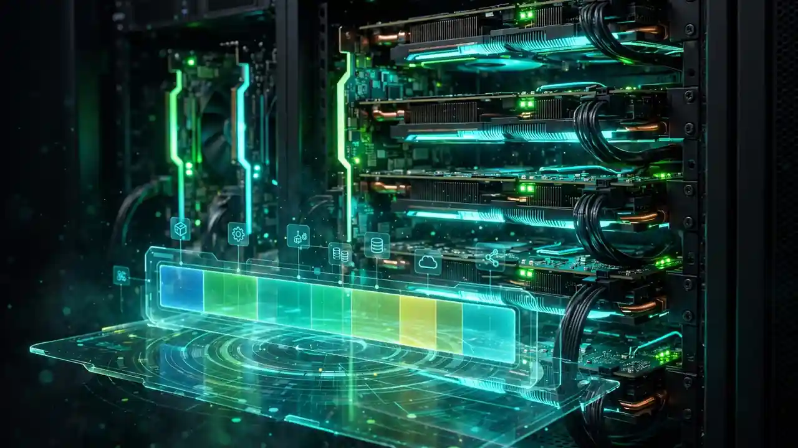
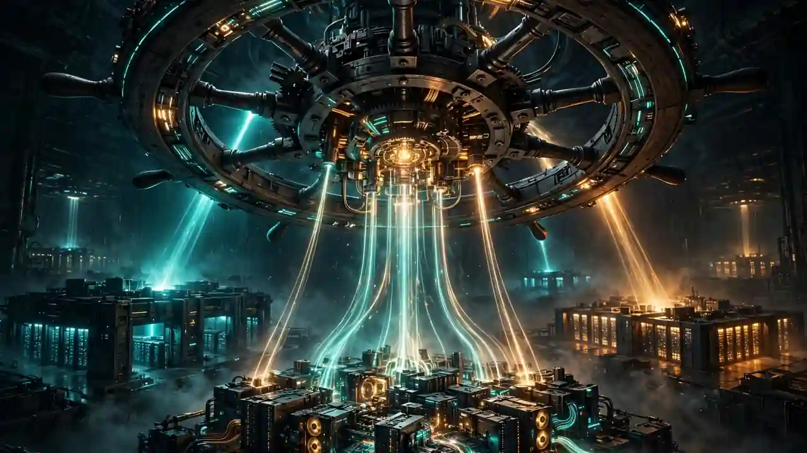

NVIDIA open-sources Run:ai: the GPU orchestration stack behind its AI factories goes public
NVIDIA is handing its GPU orchestration crown jewels to the open-source community. On Tuesday, the company announced it is making the full Run:ai platform available as open source software, turning the Kubernetes-based workload scheduler that manages AI factories into the open foundation of the NVIDIA DSX AI Factory Platform.
What NVIDIA is releasing
The release covers the complete NVIDIA Run:ai platform plus four components that teams can also adopt independently: KAI Scheduler, GPU Fractioning Operator, KAI Resource Management, and Workload Map. Platform teams can take Run:ai as an integrated whole, build on top of it, or pull in individual components.
The source code lives in the NVIDIA DSX AI Factory GitHub organization, and the full platform is also distributed on NVIDIA NGC as a Community Product with a Helm chart for installing the integrated stack. Notably, no paid Run:ai subscription or NVIDIA support entitlement is required for the Community Product — though NVIDIA enterprise support is not included either. The commercial offerings continue to exist: Run:ai remains available as a standalone product, through NVIDIA Mission Control and NVIDIA AI Enterprise, and on select cloud marketplaces.

The four building blocks
KAI Scheduler is the scheduling engine that powers Run:ai. NVIDIA released it under the Apache 2.0 license and contributed it to the Cloud Native Computing Foundation as a Sandbox project — and all future scheduler development will happen in the community repository, so improvements flow through one codebase. It coordinates gang scheduling with in-memory simulation, fair-share and quota allocation, topology-aware placement, GPU sharing across MIG, MPS, time-slicing and CUDA 13.4 MPS fractioning, and Dynamic Resource Allocation support.
The GPU Fractioning Operator brings CUDA-native GPU fractioning to Kubernetes, with the CUDA driver enforcing hard memory limits per workload. NVIDIA says it has retired Run:ai's old proprietary fractioning implementation in favor of the native CUDA 13.4 capability, and the operator is scheduler-agnostic — it works with KAI Scheduler or other schedulers.
KAI Resource Management is the organizational layer: it maps GPU capacity to projects, departments and teams with defined shares and node pools for heterogeneous hardware. Workload Map defines a contract that treats diverse Kubernetes workload types — PyTorchJob, RayCluster, JobSet, KServe InferenceService — as first-class objects through their whole lifecycle, so schedulers, dashboards and cost tools don't each need their own integration for every custom resource.

Eight partners on day one
The announcement landed with a ready-made ecosystem. Eight partners detailed same-day integrations, as covered by Blockchain.News: Crusoe is wiring Run:ai into Crusoe Managed Kubernetes, Mirantis is extending k0rdent AI with it for a "metal to model" AI factory stack, Nebius offers it as a one-click application in Nebius AI Cloud, and OpenNebula is integrating it through OneKS for open and sovereign AI clouds.
Rafay is delivering it as a fully managed service, Saturn Cloud is using it to power white-label AI inference services through its Token Factory platform, Spectro Cloud is integrating it into PaletteAI, and vCluster is shipping it through pre-validated deployment templates that stand up an isolated environment per tenant.
Model Streamer and Grove
NVIDIA also highlighted two complementary open-source projects. Model Streamer reads model weights concurrently and streams them directly into GPU memory to cut cold-start latency — it's already integrated upstream in vLLM and SGLang (enabled with the --load-format runai_streamer flag) and documented in AWS EKS and Google Cloud GKE guidance. Grove provides a Kubernetes API for orchestrating multi-component workloads such as agentic pipelines, disaggregated serving and mixture-of-experts training, and ships as a modular part of NVIDIA Dynamo.
Why it matters
Run:ai's orchestration software has been one of NVIDIA's quiet moats: it decides who gets GPU time, how GPUs are shared, and how training and inference workloads are packed onto expensive hardware. NVIDIA completed its acquisition of the Israeli startup on December 30, 2024, per TechCrunch reporting, and folding its scheduler into the open DSX AI Factory stack is a bid to make NVIDIA's orchestration layer the default grammar of the AI factory era — one that partners and clouds can now adopt, extend, and resell without a license check. The gamble is that ubiquity of the stack matters more than the licensing revenue, and with eight partners shipping on day one, the bet is already partly won.